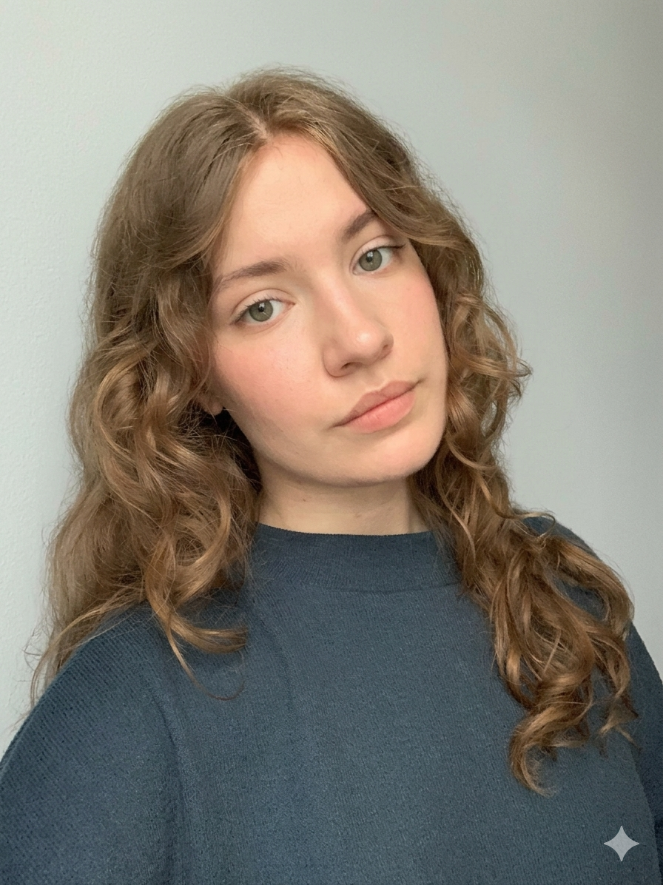
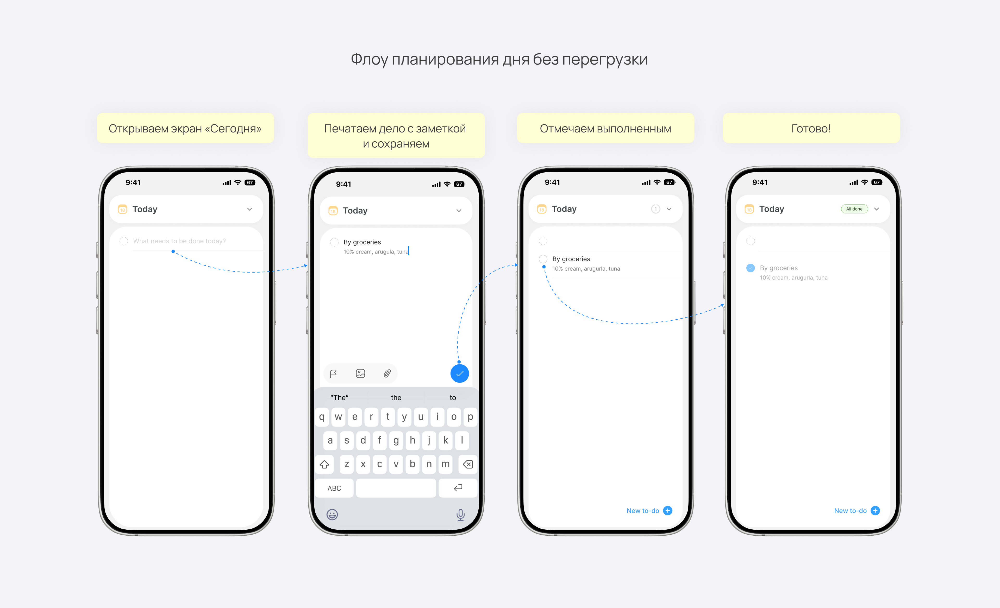
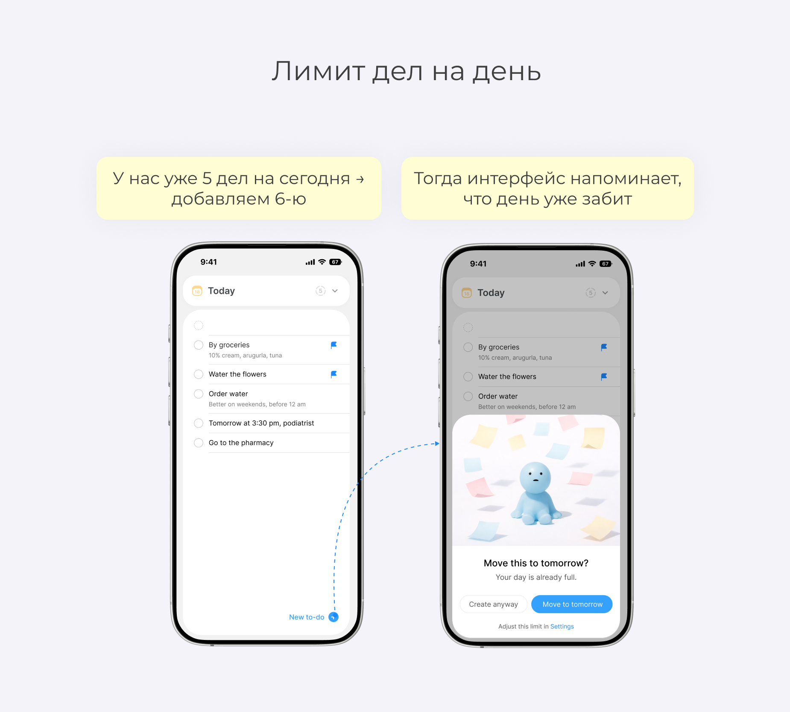

Pinterest годами игнорирует базовую гигиену управления контентом:
Открытый ресёрч подтвердил — это массовые запросы с 2012 года
Превратить Pinterest из «кладбища сохранений» в живой рабочий инструмент. Пользователь должен вдохновляться, а не заниматься «раскопками» нужных кнопок.
Убрать трение в сценариях управления — чтобы пользователь возвращался к доскам, а не избегал их.
Активные кураторы с библиотекой 800–1000 пинов. Для них неудобное управление — не мелочь, а реальный барьер.
Снижение времени поиска: пользователь находит удаление/перенос мгновенно. Adoption rate: рост использования мультиселекта. Чистота сценария: снижение паттерна «удалить + пересохранить».


Пользователи планируют дела на ходу — и список на день превращается в перегруженную простыню.
Сложно сфокусироваться и доводить задачи до конца — непонятно, за что хвататься.
Спроектировать сценарий планирования дня, который помогает не перегружать список и держать фокус на важном.


Вот что я измеряла бы: